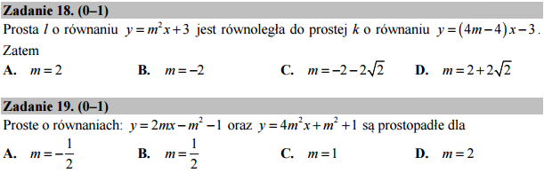

O prostopadłości i równoległości prostych¶
Sa to dwa bardzo podobne zadania dotyczą one wzajemnego położenia prostych na płaszczyżnie. Postąpimy w następujący sposób. Narysujemy sobie każdą z odpowiedzi i spróbujemy wizualnie sprawdzić czy jest poprawnym rozwiązaniem. Z drugiej strony, wypiszemy jawnie postać prostych i spróbujemy „odgadnąć” regułę.
aspect_ratio
Będziemy używać funkcji implicit_plot z opcją
acpect_ratio=1. W innym przypadku kąty na rysunkach nie
odpowiadały by faktycznym!
Zadanie 18:
Zadanie 19:
Czy wykonując powyższy kod możemy sformułować stwierdzenie na temat prostopodłości i równoległości prostych?